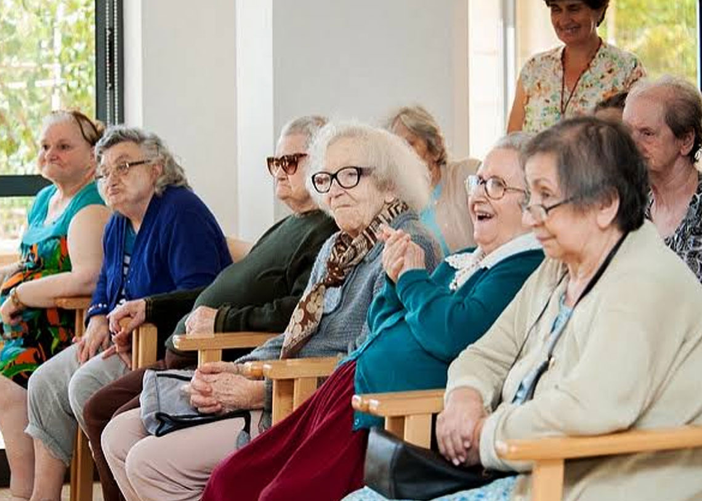
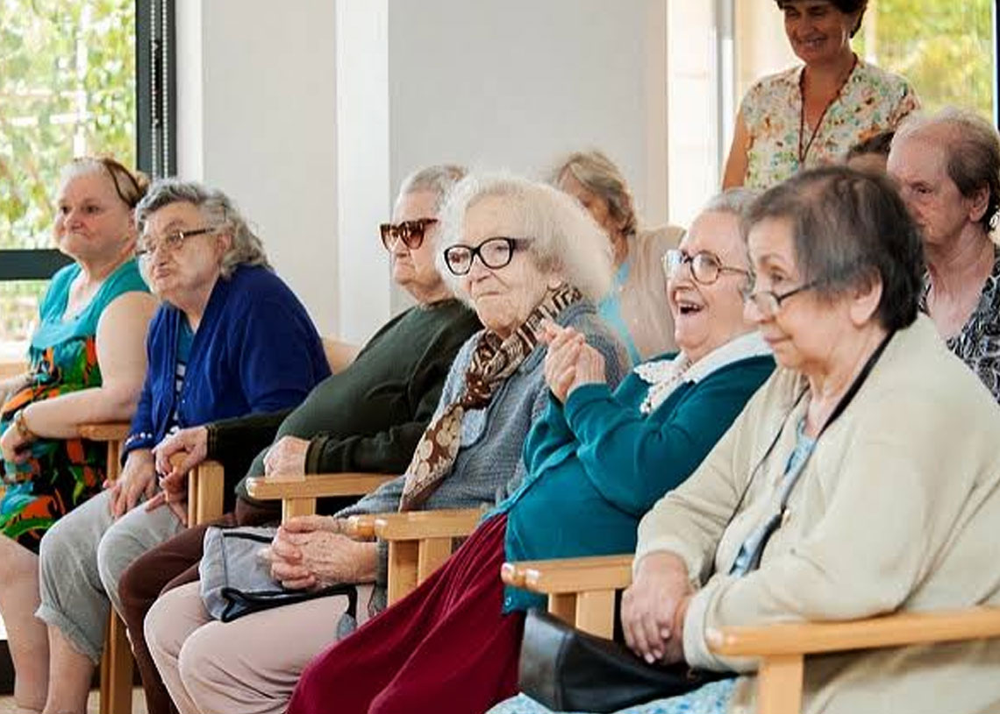

Objetivo
Se busca cubrir las nesecidades cada vez más creciente del cuidado del adulto mayor en casas de asistencias, así como de realizar una conciencia social en los jóvenes para que ellos sean parte activa del cuidado de los adultos mayores.
Se busca cubrir las nesecidades cada vez más creciente del cuidado del adulto mayor en casas de asistencias, así como de realizar una conciencia social en los jóvenes para que ellos sean parte activa del cuidado de los adultos mayores.
Se pretende llavar a los alumnos a diferentes convivencias con adultos mayores de su comunidad.
Además de que el alumno desarrolle y identifique dotos sobtre la logistica de los insumos necesarios, costos y proveedores que nesecitan los adultos mayores en casas de asistencia.
Gemma Adlemi Morales Villaegas
J. Antonio Romo Marín
David Emmanuel Andrade Torres.
Silvia Márquez Rodríguez.
Claudia Elizabeth Mártinez Murillo.
Orlando Ramiro Esquivel Arellano.
Ana Cecilia Rodarte Dúron.
Ma.Magdalena Valdivia López.
Maria Patricia Arellano Flores.
Maria Soledad Salzar Vázquez.
Juana Ines Flores López.
Luz Cecilia Sánches Zamarripa.
Brenda Susana López Gonzáles.
Stephanie Díaz Ramírez.
Mtra.Gemma Adlemi Morales Villaegas docente del Plantel CECYTEA Cd. Satelite Morelos